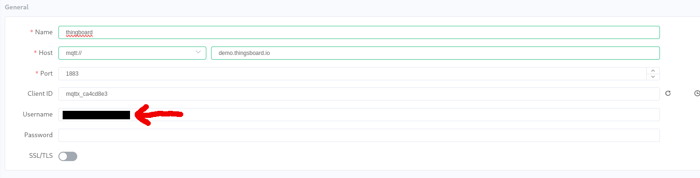
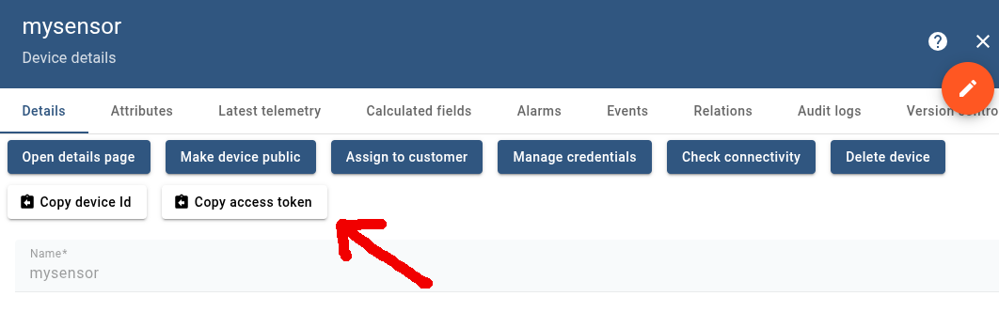
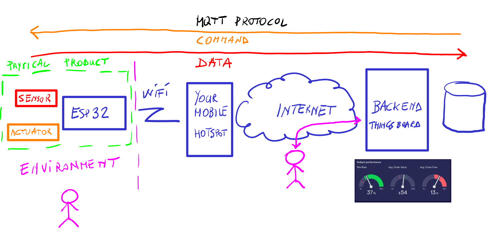
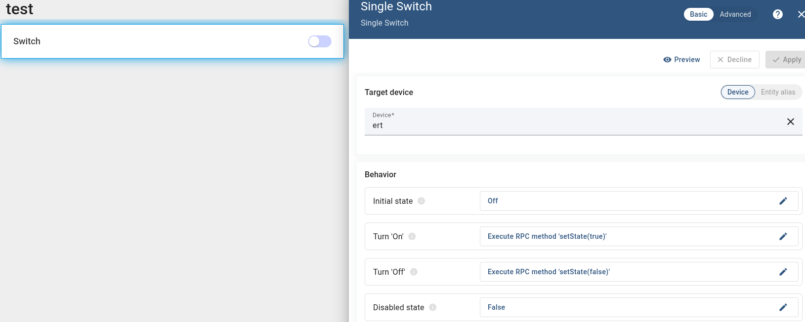

Backnnd
ssh # Backend
There are many options for a backend, but a nice solution I recommend is ThingsBoard.
There is a demo version at https://demo.thingsboard.io/ which is perfect for experimenting.
You can easily deliver data from your thing via MQTT as explained here
mosquitto_pub -d -q 1 -h "$THINGSBOARD_HOST_NAME" -p "1883" -t "v1/devices/me/telemetry" -u "$ACCESS_TOKEN" -m {"temperature":25}
A convenient multiplatform tool for experimenting is MQTTX.
The configuration is the one below where username is the access token


Note that in some cases MQTT protocol is filtered out, so be sure you are in a network that can easily deal with MQTT.
[!warning] Each device either real (e.g. and ESP32) or simulated (e.g. by MQTTX) needs to have a distinct access token If you access from multiple devices with the same access token, Thingsboard recognises only one of them
Once you are satisfied by your experiments, you can easily move to a real thing with the follwoing code.
You need to install the following libraries in your Arduino IDE:
- WiFi (Standard library for ESP32)
- PubSubClient by Nick O'Leary
#include <WiFi.h>
#include <PubSubClient.h>
// --- Network Configuration ---
const char* WIFI_SSID = ""; // <-- REPLACE with your Wi-Fi network name
const char* WIFI_PASS = ""; // <-- REPLACE with your Wi-Fi password
// --- ThingsBoard & MQTT Configuration ---
// ThingsBoard Cloud MQTT Server Address (use your instance if self-hosted)
const char* TB_SERVER = "demo.thingsboard.io"; // Or your TB instance (e.g., 'thingsboard.cloud')
const int TB_PORT = 1883; // Default MQTT port
// ThingsBoard Authentication: The ACCESS TOKEN is used as the MQTT USERNAME
const char* TB_ACCESS_TOKEN = ""; // <-- REPLACE with your actual Device Access Token
// Topics for publishing telemetry data and attributes
const char* TELEMETRY_TOPIC = "v1/devices/me/telemetry"; // The standard topic for device data
const char* ATTRIBUTES_TOPIC = "v1/devices/me/attributes"; // Topic for device attributes (e.g., firmware version)
// --- Initialize Clients ---
WiFiClient espClient;
PubSubClient client(espClient);
// Timing variables for publishing data
long lastMsg = 0;
const int PUBLISH_INTERVAL = 10000; // Publish every 10 seconds (10000 ms)
// Function prototypes
void setup_wifi();
void reconnect_mqtt();
// =========================================================================
// SETUP
// =========================================================================
void setup() {
Serial.begin(115200);
setup_wifi();
// Set the MQTT server
client.setServer(TB_SERVER, TB_PORT);
// Note: We don't need a callback here since we are only publishing (for now).
}
// =========================================================================
// LOOP
// =========================================================================
void loop() {
// Check and maintain the MQTT connection
if (!client.connected()) {
reconnect_mqtt();
}
// PubSubClient requires loop() to be called frequently
client.loop();
long now = millis();
if (now - lastMsg > PUBLISH_INTERVAL) {
lastMsg = now;
publishTelemetry();
}
}
// =========================================================================
// HELPER FUNCTIONS
// =========================================================================
// Connect to Wi-Fi
void setup_wifi() {
delay(10);
Serial.print("Connecting to ");
Serial.println(WIFI_SSID);
WiFi.begin(WIFI_SSID, WIFI_PASS);
while (WiFi.status() != WL_CONNECTED) {
delay(500);
Serial.print(".");
}
Serial.println("\nWiFi connected");
Serial.print("IP address: ");
Serial.println(WiFi.localIP());
}
// Reconnect to ThingsBoard MQTT Broker
void reconnect_mqtt() {
// Loop until we're reconnected
while (!client.connected()) {
Serial.print("Attempting MQTT connection to ThingsBoard...");
// --- CRITICAL AUTHENTICATION STEP ---
// ThingsBoard uses the ACCESS TOKEN as the MQTT USERNAME.
// The password field is typically left empty (NULL).
if (client.connect(TB_ACCESS_TOKEN, TB_ACCESS_TOKEN, NULL)) {
Serial.println("connected!");
// Optionally, send an attribute (e.g., firmware version) upon connection
client.publish(ATTRIBUTES_TOPIC, "{\"firmware_version\":\"1.0.0\"}");
} else {
Serial.print("failed, rc=");
Serial.print(client.state());
Serial.println(" trying again in 5 seconds...");
delay(5000);
}
}
}
// Function to generate and publish telemetry data
void publishTelemetry() {
// 1. Generate a simulated sensor reading (replace with real sensor data)
// Generates a random float between 20.0 and 30.0
float temperature = random(200, 300) / 10.0;
float humidity = random(400, 600) / 10.0;
// 2. Format the data as a JSON string (mandatory for ThingsBoard telemetry)
// {"temperature": 25.5, "humidity": 45.0}
String payload = "{\"temperature\":" + String(temperature) +
",\"humidity\":" + String(humidity) + "}";
// 3. Publish the JSON payload
// The topic MUST be "v1/devices/me/telemetry"
if (client.publish(TELEMETRY_TOPIC, payload.c_str())) {
Serial.print("Published telemetry: ");
Serial.println(payload);
} else {
Serial.println("Failed to publish telemetry.");
}
}
[!tip] Now instead of sending random temperature and humidity values, send the values read from a potentiometer connected to your node
[!caution] Some pins might interfere. As an example pin 15 is used by the WiFi. If you use that pin for analogRead it does't read properly because it is occupied by the WiFi

How to receive a command on the node
The node subscribe to
mosquitto_sub -h "$THINGSBOARD_HOST_NAME" -p "1883" -t "v1/devices/me/rpc/request/+" -u "$ACCESS_TOKEN"
{"method":"setState","params":true} {"method":"setState","params":false} {"method":"setState","params":true} {"method":"setState","params":false}

#include <WiFi.h>
#include <PubSubClient.h>
// --- Network Configuration ---
const char* WIFI_SSID = ""; // <-- REPLACE with your Wi-Fi network name
const char* WIFI_PASS = ""; // <-- REPLACE with your Wi-Fi password
// --- ThingsBoard & MQTT Configuration ---
const char* TB_SERVER = "demo.thingsboard.io";
const int TB_PORT = 1883;
const char* TB_ACCESS_TOKEN = ""; // <-- REPLACE with your actual Device Access Token
// Topics
const char* TELEMETRY_TOPIC = "v1/devices/me/telemetry";
const char* ATTRIBUTES_TOPIC = "v1/devices/me/attributes";
const char* RPC_SUBSCRIBE_TOPIC = "v1/devices/me/rpc/request/+"; // Topic for incoming RPC requests
// --- Hardware Settings ---
const int LED_PIN = 2; // GPIO 2 is usually the Built-in LED on ESP32
// --- Initialize Clients ---
WiFiClient espClient;
PubSubClient client(espClient);
// Timing variables
long lastMsg = 0;
const int PUBLISH_INTERVAL = 10000;
// Function prototypes
void setup_wifi();
void reconnect_mqtt();
void publishTelemetry();
void on_message(char* topic, byte* payload, unsigned int length); // Callback prototype
// =========================================================================
// SETUP
// =========================================================================
void setup() {
Serial.begin(115200);
// Initialize LED
pinMode(LED_PIN, OUTPUT);
digitalWrite(LED_PIN, LOW); // Start with LED off
setup_wifi();
// Set the MQTT server and the callback function for incoming messages
client.setServer(TB_SERVER, TB_PORT);
client.setCallback(on_message);
}
// =========================================================================
// LOOP
// =========================================================================
void loop() {
if (!client.connected()) {
reconnect_mqtt();
}
client.loop(); // Keeps the MQTT connection alive and listens for incoming messages
long now = millis();
if (now - lastMsg > PUBLISH_INTERVAL) {
lastMsg = now;
publishTelemetry();
}
}
// =========================================================================
// HELPER FUNCTIONS
// =========================================================================
// 1. Connect to Wi-Fi
void setup_wifi() {
delay(10);
Serial.println();
Serial.print("Connecting to ");
Serial.println(WIFI_SSID);
WiFi.begin(WIFI_SSID, WIFI_PASS);
while (WiFi.status() != WL_CONNECTED) {
delay(500);
Serial.print(".");
}
Serial.println("\nWiFi connected");
Serial.print("IP address: ");
Serial.println(WiFi.localIP());
}
// 2. Reconnect to MQTT Broker
void reconnect_mqtt() {
while (!client.connected()) {
Serial.print("Attempting MQTT connection to ThingsBoard...");
// Connect with ClientID (Token) and Username (Token)
if (client.connect(TB_ACCESS_TOKEN, TB_ACCESS_TOKEN, NULL)) {
Serial.println("connected!");
// Send attributes on connect
client.publish(ATTRIBUTES_TOPIC, "{\"firmware_version\":\"1.0.0\"}");
// --- SUBSCRIBE TO RPC REQUESTS ---
// We must subscribe here so we re-subscribe if WiFi drops and reconnects
client.subscribe(RPC_SUBSCRIBE_TOPIC);
Serial.println("Subscribed to RPC requests");
} else {
Serial.print("failed, rc=");
Serial.print(client.state());
Serial.println(" trying again in 5 seconds...");
delay(5000);
}
}
}
// 3. MQTT Callback (Handle incoming messages)
void on_message(char* topic, byte* payload, unsigned int length) {
Serial.print("Message arrived [");
Serial.print(topic);
Serial.print("] ");
// Convert payload to a String for easy parsing
String message = "";
for (int i = 0; i < length; i++) {
message += (char)payload[i];
}
Serial.println(message);
// Check if the message is the 'setState' method
// Payload example: {"method":"setState","params":true}
if (message.indexOf("setState") != -1) {
// Check for true/false in the params
if (message.indexOf("true") != -1) {
digitalWrite(LED_PIN, HIGH);
Serial.println("Command: LED ON");
}
else if (message.indexOf("false") != -1) {
digitalWrite(LED_PIN, LOW);
Serial.println("Command: LED OFF");
}
}
}
// 4. Generate and publish telemetry
void publishTelemetry() {
float temperature = random(200, 300) / 10.0;
float humidity = random(400, 600) / 10.0;
String payload = "{\"temperature\":" + String(temperature) +
",\"humidity\":" + String(humidity) + "}";
if (client.publish(TELEMETRY_TOPIC, payload.c_str())) {
Serial.print("Published telemetry: ");
Serial.println(payload);
} else {
Serial.println("Failed to publish telemetry.");
}
}
[!note] Exactly the same process, namely publish/subscribe on a specific topic, can be used to allow devices to communicate each other
Take advantage of an ecosystem of objects
https://github.com/public-apis/public-apis
https://thingsboard.io/docs/user-guide/rule-engine-2-0/tutorials/get-weather-using-rest-api-call/